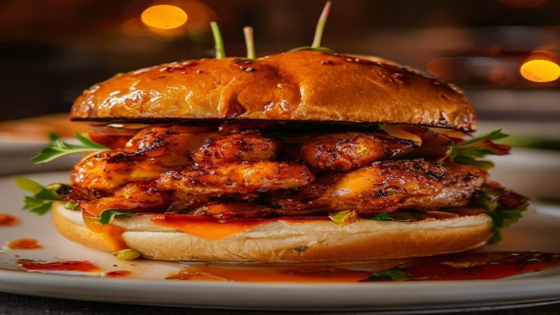

Spicy Honey Chicken Sandwich | Crispy & Addictive
This Spicy Honey Chicken Sandwich is crispy, juicy, and dripping with hot honey. A buttermilk-brined chicken thigh, crunchy pickles, and a pillowy brioche bun. Fast food chain level — made at home!
Ingredients
- 4 boneless chicken thighs
- 1 cup buttermilk
- 1.5 cups flour
- 1 tablespoon cayenne pepper
- 1 tablespoon paprika
- 1 teaspoon garlic powder
- Oil for frying
- 4 brioche buns
- Dill pickle slices
- 1/4 cup honey
- 1 tablespoon hot sauce
- Coleslaw (optional)
Instructions
Move over fast food chains — this homemade Spicy Honey Chicken Sandwich is crispier, juicier, and way more satisfying!
Soak chicken thighs in buttermilk for at least 30 minutes (or overnight for maximum tenderness). Season the buttermilk with a pinch of salt.
Mix flour, cayenne, paprika, garlic powder, salt, and pepper in a shallow dish. Remove chicken from buttermilk, letting excess drip off, and dredge in seasoned flour. Press firmly to coat.
Heat 1 inch of oil to 350°F (175°C) in a heavy skillet. Fry chicken for 4-5 minutes per side until deep golden and cooked through (165°F internal).
Make hot honey: warm honey with hot sauce in a small pan. Drizzle generously over the fried chicken.
Toast brioche buns and assemble: bottom bun, pickles, crispy chicken with hot honey, coleslaw (if using), top bun. Serve immediately!
The buttermilk brine is the secret to incredibly juicy chicken. The hot honey takes it to another level. This will become your most requested recipe!